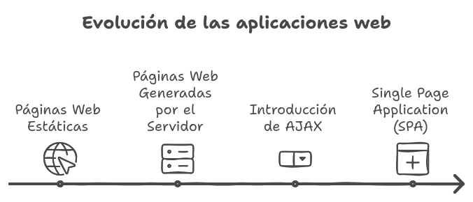

La Web i el Desenvolupament Web¶
La Web és un dels conjunts de protocols més reeixits d'Internet, i la seva creació va marcar un abans i un després en la manera com accedim i compartim informació. Va ser inventada per Tim Berners-Lee al CERN (Organització Europea per a la Recerca Nuclear) i ha evolucionat fins a convertir-se en una eina fonamental en la vida quotidiana i professional de milions de persones.
La Web es basa en el concepte de hipertext, una tecnologia que permet enllaçar diferents documents i recursos a través d'enllaços o hipervincles. Aquesta capacitat denllaç és el que permet la navegació entre diferents pàgines i llocs web.
El World Wide Web Consortium (W3C) és lorganització que sencarrega de desenvolupar estàndards per a la Web. El seu objectiu és garantir que la Web continuï sent oberta, accessible i funcional per a tothom. Aquests estàndards inclouen tecnologies fonamentals com HTML, CSS i JavaScript.
Components de la Web¶
La Web es compon de diversos elements clau:
- Hipertext: Permet la creació denllaços entre documents.
- Protocol HTTP: És el protocol de comunicació que permet la transferència de dades a la Web.
- Servidors i Clients: Els servidors allotgen els llocs web i els clients (navegadors web) els sol·liciten i mostren.
- DNS (Sistema de Noms de Domini): Tradueix els noms de domini llegibles per humans (com www.ejemplo.com) en adreces IP que els ordinadors poden entendre.
El Desenvolupament Web¶
El desenvolupament web és un camp multidisciplinari que abasta diverses àrees i tecnologies. A continuació, es descriuen les principals àrees professionals del desenvolupament web:
Contingut
El contingut es refereix a l'organització, semàntica, presentació i estructura de la informació a la web. El llenguatge fonamental per al contingut web és HTML (HyperText Markup Language), que defineix lestructura i el contingut duna pàgina web.
Disseny
El disseny se centra en laspecte visual i els elements gràfics duna pàgina web. Utilitza tecnologies com CSS (Cascading Style Sheets) per definir estils i plantilles que controlen l'aparença de les pàgines.
Tecnologia Frontend
Les tecnologies frontend són les que s'executen al navegador de l'usuari i són responsables dels elements interactius d'una pàgina web. El principal llenguatge de programació frontend és JavaScript, que permet crear interfícies dinàmiques i reactives.
Tecnologia Backend
El backend s'encarrega de la lògica del servidor, l'accés a les bases de dades i el processament de les sol·licituds dels usuaris. Els llenguatges comuns de backend inclouen PHP, Python i Node.js, entre d'altres.
Distribució
La distribució fa referència a com es despleguen i gestionen els llocs web. Això inclou tant el maquinari (servidors, màquines virtuals, contenidors) com el programari (servidors web com Apache, IIS i NGINX).
Propòsit
Les webs es fan per a alguna cosa. Definir el propòsit pot ser que no sigui la tasca més tècnica, però calen perfils intermedis que sàpiguen traslladar les necessitats dels clients als desenvolupadors. O fins i tot inventar nous models de negoci basats en tecnologies web.
Arquitectura Client - Servidor¶
L'arquitectura client-servidor és el model fonamental en què es basa la web. Es divideix en dues parts principals:
- Server-side (Costat del servidor)
- Maquinari: Inclou servidors i elements de xarxa, màquines virtuals i contenidors.
- Programari: Involucra servidors web (com Apache, IIS, NGINX) i llenguatges CGI (com Perl, PHP, C). També inclou llenguatges i frameworks amb servidors web integrats, com ara Python, Java, Node.js i C++.
- Client-side (Costat del client)
- Clients web: navegadors web com ara Firefox, Chrome, Vivaldi, Opera, Edge i Internet Explorer.
- Llenguatges de marques: HTML, XHTML, HTML5 i CSS.
- Llenguatges de programació de l'entorn Client: Principalment JavaScript.
El Camí del Frontend¶
Per a més detalls, podeu consultar Full de ruta per a desenvolupadors de front-end.
Aquest terme, extret de la web anterior, reflecteix l'itinerari formatiu recomanat per ser un professional del desenvolupament web a la part del Frontend. Aquest mòdul no és suficient per dominar-ho tot i és important ser conscients que estem veient una petita part de les múltiples possibilitats que tenim al nostre abast.
Del costat del servidor vs del costat del client¶
En el desenvolupament web, tant el costat del servidor (server-side) com el costat del client (client-side) juguen els seus rols. No obstant això, moltes tasques poden dur-se a terme a qualsevol dels dos costats, i lelecció don implementar una funcionalitat específica depèn de diversos factors, com la tecnologia adequada per al cas o la comoditat del desenvolupador amb una tecnologia particular.
Tasques comunes a Server-side i Client-side¶
- Validar formularis: La validació es pot fer al client per millorar l'experiència de l'usuari, però s'ha de verificar novament al servidor per raons de seguretat.
- Desar dades permanents: Generalment es fa al servidor utilitzant bases de dades.
- Presentació de diapositives: És més comú al costat del client, utilitzant JavaScript o frameworks de frontend.
- Eliminar un paràgraf: Aquesta tasca es realitza típicament al client, utilitzant JavaScript per modificar el DOM (Document Object Model).
- Calcular dades: Els càlculs es poden fer a banda i banda, depenent de la naturalesa del càlcul i els requisits de seguretat.
- Accedir a bases de dades: Aquesta tasca es realitza al servidor per mantenir la seguretat i la integritat de les dades.
JavaScript al costat del client¶
JavaScript és el llenguatge de programació més utilitzat al costat del client. Tot i això, té les seves limitacions i particularitats:
- Limitacions de JavaScript:
- No podeu escriure directament al servidor.
- No tots els navegadors suporten JavaScript i es pot desactivar, de manera que una pàgina web ben dissenyada hauria de funcionar sense.
- No podeu modificar preferències del navegador, llançar aplicacions, llegir o escriure fitxers al client, retransmetre streaming, enviar correus electrònics, interactuar amb llenguatges de servidor, accedir a un web d'un domini diferent, protegir l'origen de les imatges, ni implementar multiprocessos.
- Tecnologia asíncrona:
- JavaScript pot sol·licitar dades al servidor de forma asíncrona utilitzant tecnologies com AJAX (Asynchronous JavaScript and XML).
- Usos de JavaScript:
- Fer que la web reaccioni a la interacció de lusuari.
- Proporcionar una interfície agradable per a les dades.
- Controlar finestres, marcs i applets al document HTML.
- Preprocessar dades abans d'enviar-les al servidor.
- Modificar l'estil i el contingut de manera dinàmica en funció de la interacció de l'usuari.
- Sol·licitar o enviar fitxers al servidor.
Compatibilitat i Validació HTML¶
Per evitar problemes de compatibilitat, el codi HTML ha de ser vàlid. Es pot utilitzar el validador d'HTML del W3C (https://validator.w3.org/) per assegurar-se que el codi compleixi amb els estàndards.
Seguretat en JavaScript¶
El JavaScript s'executa en un entorn segur sense contacte directe amb el sistema operatiu del client. Implementa una "política del mateix origen", cosa que significa que només té accés a dades rebudes del mateix servidor des del qual va ser carregat.
Entorns de Programació Web per al Client¶
L'elecció del programari per al desenvolupament web depèn de les necessitats i la complexitat del projecte:
- Programari per a modificacions casuals:
- Editors de text lleugers i ràpids com Gedit, Nano, Notepad.
- Editors de text avançats:
- Eines més potents com Sublim Text, Brackets, Jedit, Visual Studio Code, Vim.
- Entorns de Desenvolupament Integrats (IDEs):
- Solucions completes com NetBeans, Eclipse, WebStorm.
Preparar l'entorn de desenvolupament¶
En un entorn de desenvolupament típic, com una classe de programació web, es pot utilitzar Visual Studio Code amb les extensions següents:
- Més bonica: Per formatar fitxers de manera automàtica, ja sigui manualment o en desar.
- EsLint: Ajuda a detectar errors d'estil o programació que JavaScript no pot detectar per si mateix (requereix instal·lar eslint al projecte).
- Servidor en directe: Per provar la web en un servidor local de manera ràpida i senzilla.
Més endavant anirem instal·lant alguna extensions més.
Altres Eines¶
- Tecla F12 als navegadors: Accedeix a les eines de desenvolupament del navegador.
- Edició per a desenvolupadors de Firefox: Una versió del navegador Firefox amb eines avançades per a desenvolupadors web.
Tipus d'aplicacions web segons el Frontend¶
El desenvolupament d'aplicacions web ha evolucionat significativament amb el temps i avui dia hi ha diverses maneres d'abordar el frontend. A continuació, explorarem els diferents tipus d'aplicacions web segons les tecnologies de frontend que es facin servir, així com l'evolució de les mateixes.
- Amb JavaScript 'Vanilla': Es refereix a la utilització de JavaScript pur sense cap biblioteca o framework addicional. És una manera directa i eficient de programar sobretot quan són aplicacions petites i senzilles.
- Amb Biblioteques:
- JQuery: Facilita la manipulació del DOM, esdeveniments i AJAX.
- Prototip: Simplifica les tasques de programació orientada a objectes en JavaScript.
- D3.js: S'utilitza per crear visualitzacions de dades.
- Bootstrap: Biblioteca de CSS i JavaScript per a disseny responsiu.
- View.js: Ofereix una manera progressiva de construir interfícies dusuari.
- Reacciona: Biblioteca per construir interfícies d'usuari, principalment en aplicacions d'una sola pàgina.
- Con Frameworks:
- Angular: Framework de JavaScript de Google per construir aplicacions dinàmiques duna sola pàgina.
- Reacciona: Encara que és una biblioteca, també s'utilitza com a framework quan es combina amb altres eines.
- View.js: Igual que React, es pot considerar un framework quan s'utilitza en projectes més grans.
- Phaser: Framework per al desenvolupament de jocs en HTML5.
- Con Frameworks Full Stack:
- Odoo: Plataforma de codi obert que proporciona un conjunt complet d'aplicacions empresarials.
- Blitz: Framework de React basat en Next.js per a aplicacions de pila completa.
- Next.js: Framework de React per a aplicacions de servidor i client.
- SvelteKit: Framework per construir aplicacions ràpides i modernes.
Evolució de les Aplicacions Web¶
- Pàgines Web Estàtiques: Les primeres aplicacions web eren simples pàgines estàtiques amb hipervincles.
- Pàgines Web Generades pel Servidor: Amb el temps, es va introduir una mica de JavaScript per millorar la interacció.
- Introducció d'AJAX: Permet carregar o pujar dades al servidor de manera asíncrona, millorant la interactivitat sense recarregar la pàgina.
- Aplicació d'una sola pàgina (SPA): Les aplicacions d'una sola pàgina es comuniquen amb el servidor usant JSON o XML, proporcionant una experiència més fluida.

Evolució de les aplicacions web.
Actualment es poden fer pàgines web de moltes maneres. En aquest llibre, cap al final, ens enfoquem més a imitar els frameworks actuals, que solen estar pensats per a SPA amb una API. No obstant això, es poden fer pàgines només amb HTML estàtic, o generat una vegada a partir de Markdown, com aquest mateix llibre (Jekyll, Jupyter Books...), també es pot generar HTML amb PHP, Node, Java... O es pot tenir un CMS com a Wordpress i programar plugins. Es pot tenir un CMS Headless o generat mitjançant Micro-Frontends. O aplicacions progressives PWA o Híbrides amb Ionic i Cordova. Pel que fa a servir-les, tenim els hostings i servidors tradicionals o "Serverless", plataformes "Low Code"... La llista no s'acaba i cadascuna d'aquestes idees té moltes més opcions.
Aplicacions d'una sola pàgina (SPA)¶
- SPA com a sobreenginyeria: En molts casos, utilitzar SPA pot complicar innecessàriament el desenvolupament web. Tot seguit veurem la justificació per fer web d'aquesta manera.
- Freqüència d'ús: És important considerar si l'aplicació serà utilitzada constantment o esporàdicament. Una aplicació web utilitzada esporàdicament no ha de ser molt pesada i és millor que sigui generada pel servidor o estàtica per millorar el SEO. No obstant això, una aplicació web que el client manté sempre oberta, pot ser més agradable dutilitzar si és una SPA.
- Servidor vs Client: Crear l'HTML i l'estil al servidor pot ser menys complicat, però en aplicacions grans, podeu sobrecarregar el servidor i dificultar la separació de la vista del model i controlador.
- SPA al nostre mòdul: Optarem per una SPA pel fet que és més adequat per al mòdul que estem desenvolupant. Una SPA requereix saber construir elements del DOM, comunicar-se amb el servidor mitjançant peticions asíncrones amb Javascript i manejar els esdeveniments i la reactivitat. Per tant, és l'escusa perfecta per impartir els nostres continguts.
Entre la pàgina web i l'APP¶
- Pàgines Web: Contingut estàtic i dinàmic accessible a través de navegadors.
- Aplicacions Web: Poden ser SPA o no.
- Aplicacions Web Responsives: Dissenyades per adaptar-se a diferents dispositius.
- PWA (aplicació web progressiva): Combinen el millor de les pàgines web i les aplicacions mòbils.
- Apps Híbrides: Utilitzen frameworks com Ionic per funcionar en múltiples plataformes.
- Aplicacions pràcticament natives: Utilitzen tecnologies com React Native o Flutter per apropar-se al rendiment de les aplicacions natives.
Les Biblioteques¶
- Característiques: Aporten funcionalitats específiques al llenguatge de programació.
- Flexibilitat: No obliguen a canviar la manera de programar.
- Simplificació: Faciliten la programació de tasques concretes.
- Desavantatges: Poden crear dependència al programador.
- Reemplaçament: Algunes biblioteques, com Underscore, Lodash o JQuery, han perdut rellevància amb la introducció d'ES6.
Els Frameworks¶
- Modificació: Canvien completament la manera de programar.
- Integració: S'encarreguen de plantilles, comunicacions, encaminaments, components, mòduls, etc.
- Corba d'aprenentatge: Són complexos d'aprendre.
- Eficiència: Un cop dominats, fan la programació més àgil i correcta.
- Inèrcia: Poden dificultar el canvi a un altre framework.
- Obsolescència: Si el framework queda obsolet, la web també.
Utilitat dels Frameworks¶
- Aplicacions específiques: Són útils si es desenvolupen per a una aplicació en particular.
- Normes: Són valuosos si permeten exportar components.
- Valor afegit: Han d'aportar una cosa única.
- Aplicacions no crítiques: Són ideals per a aplicacions que no són crítiques.
Obtenció de Biblioteques i Frameworks¶
- Descàrrega directa: Descarregar un fitxer .js o un directori comprimit del web oficial i copiar-lo al projecte.
- CDN: Utilitzar un CDN directament des de la web oficial.
- Gestors de paquets: Utilitzar NPM o Yarn per gestionar dependències.
Modes i Tendències¶
Les xarxes socials són plenes de gent intentant vendre el seu curs. Al món professional hi ha molta més gent treballant silenciosament i eficaçment en productes de qualitat i duradors. Encara que els primers tinguin una mica de raó a dir que PHP, JQuery o altres estan obsolets, el món laboral de vegades diu el contrari. Cal prendre una certa distància per triar la millor tecnologia per a cada ocasió. (https://www.bitecode.dev/p/hype-cycles)
Posar la Web en Producció¶
Perquè una web amb HTML, CSS i Javascript funcioni tan sols necessitem un servidor web que serveixi estàticament aquests fitxers quan se us faci una petició HTTP. Aquest servidor sol estar accessible per Internet mitjançant SFTP, SSH o qualsevol protocol. Aquests HTML, CSS i JS poden ser tractats de dues maneres:
- Mètode tradicional: Copiar tot el contingut de les carpetes al servidor al voltant del fitxer index.html.
- Eina de creació de JavaScript: Utilitzar eines que compilen el codi font, el minifiquen, unifiquen, optimitzen i comprimeixen per millorar la velocitat de càrrega i evitar incompatibilitats entre navegadors.
Més endavant, al capítol del CI/CD parlarem d'una metodologia per automatitzar tot el procés. Amb aquesta metodologia podrem centrar-nos a escriure codi còmodament mentre que les nostres eines ho proven tot i ho posen en producció.